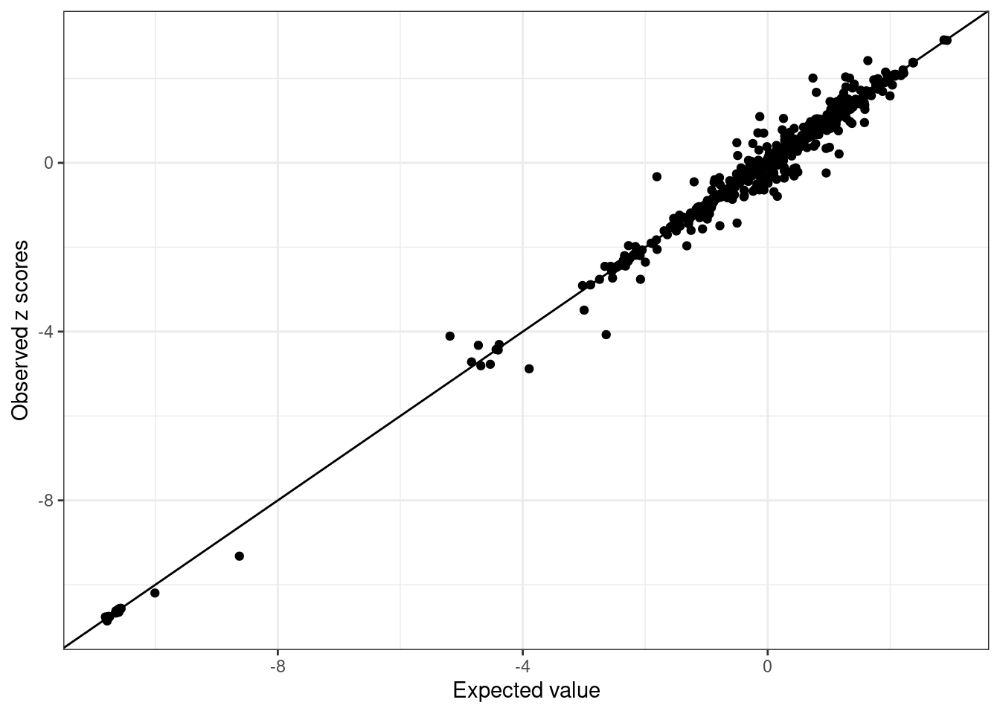
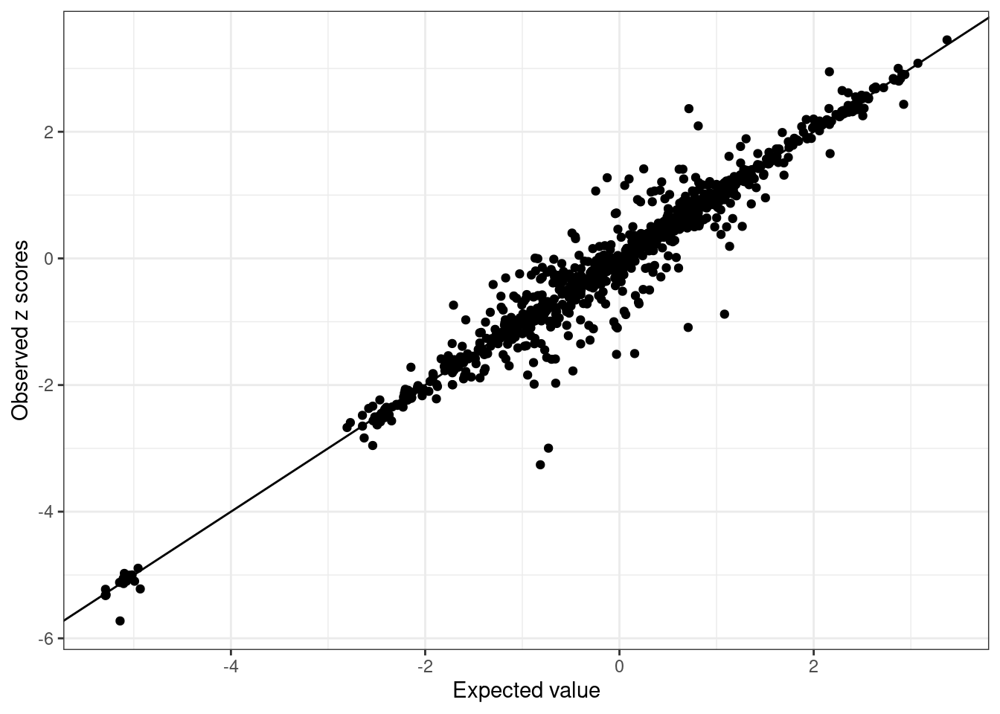
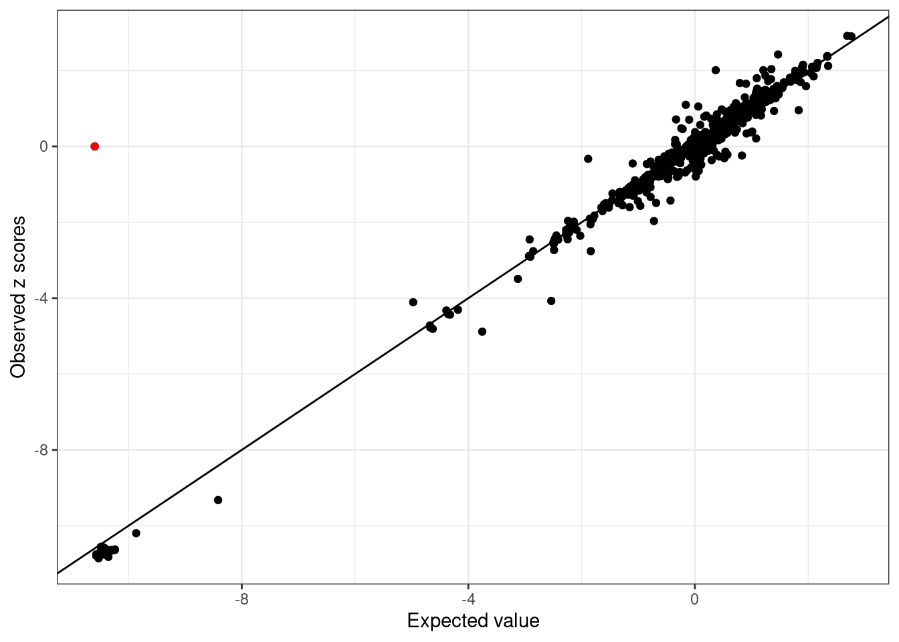

Last updated: 2024-01-15
Checks: 6 1
Knit directory: meSuSie_Analysis/
This reproducible R Markdown analysis was created with workflowr (version 1.7.1). The Checks tab describes the reproducibility checks that were applied when the results were created. The Past versions tab lists the development history.
Great! Since the R Markdown file has been committed to the Git repository, you know the exact version of the code that produced these results.
Great job! The global environment was empty. Objects defined in the global environment can affect the analysis in your R Markdown file in unknown ways. For reproduciblity it’s best to always run the code in an empty environment.
The command set.seed(20220530) was run prior to running
the code in the R Markdown file. Setting a seed ensures that any results
that rely on randomness, e.g. subsampling or permutations, are
reproducible.
Great job! Recording the operating system, R version, and package versions is critical for reproducibility.
Nice! There were no cached chunks for this analysis, so you can be confident that you successfully produced the results during this run.
Using absolute paths to the files within your workflowr project makes it difficult for you and others to run your code on a different machine. Change the absolute path(s) below to the suggested relative path(s) to make your code more reproducible.
| absolute | relative |
|---|---|
| /net/fantasia/home/borang/Susie_Mult/meSuSie_Analysis/ | . |
| /net/fantasia/home/borang/Susie_Mult/meSuSie_Analysis/data/MESuSiE_Example.RData | data/MESuSiE_Example.RData |
Great! You are using Git for version control. Tracking code development and connecting the code version to the results is critical for reproducibility.
The results in this page were generated with repository version a740551. See the Past versions tab to see a history of the changes made to the R Markdown and HTML files.
Note that you need to be careful to ensure that all relevant files for
the analysis have been committed to Git prior to generating the results
(you can use wflow_publish or
wflow_git_commit). workflowr only checks the R Markdown
file, but you know if there are other scripts or data files that it
depends on. Below is the status of the Git repository when the results
were generated:
Untracked files:
Untracked: data/GLGC_chr_22.txt
Untracked: data/MESuSiE_Example.RData
Untracked: data/UKBB_chr_22.txt
Unstaged changes:
Deleted: analysis/illustration.Rmd
Deleted: analysis/toy_example.Rmd
Note that any generated files, e.g. HTML, png, CSS, etc., are not included in this status report because it is ok for generated content to have uncommitted changes.
These are the previous versions of the repository in which changes were
made to the R Markdown (analysis/GWAS_QC.Rmd) and HTML
(docs/GWAS_QC.html) files. If you’ve configured a remote
Git repository (see ?wflow_git_remote), click on the
hyperlinks in the table below to view the files as they were in that
past version.
| File | Version | Author | Date | Message |
|---|---|---|---|---|
| Rmd | a740551 | borangao | 2024-01-15 | Update GWAS QC |
| html | 428bdf0 | borangao | 2023-10-09 | Build site. |
| Rmd | ba8db56 | borangao | 2023-10-09 | Update my analysis |
| html | 504f3a9 | borangao | 2023-10-09 | Build site. |
| Rmd | 62ce4b3 | borangao | 2023-10-09 | Update my analysis |
Note: Following this guideline will help maintain the integrity and accuracy of the fine-mapping process across multiple ancestries.
For illustrative purposes, we utilized the GWAS summary statistics of
HDL on chromosome 22 from the UK Biobank (UKBB; https://www.nealelab.is/uk-biobank) and the Global
Lipids Genetics Consortium (GLGC; https://csg.sph.umich.edu/willer/public/glgc-lipids2021/results/ancestry_specific/).
We offer a suite of functions for data preparation, which include
GWAS_QC,find_common_snps,allele_flip.
Additionally, we have adapted the kriging_rss function from
SuSiE for enhanced functionality.
We advise removing strand-ambiguous SNPs, multi-allelic SNPs, SNPs
within MHC regions, and SNPs with a Minor Allele Frequency (MAF) less
than 0.001. The GWAS_QC function requires summary data
columns: CHR, POS, CHR_POS, REF, ALT, MAF, BETA, and SE. Additionally,
users have the flexibility to define a specific MAF threshold when using
the function.
library(MESuSiE)
library(data.table)
library(dplyr)
library(snpStats)
setwd("/net/fantasia/home/borang/Susie_Mult/meSuSie_Analysis/")
UKBB <- fread("data/UKBB_chr_22.txt")
GLGC <- fread("data/GLGC_chr_22.txt")
UKBB <- GWAS_QC(UKBB, 0.001)
GLGC <- GWAS_QC(GLGC, 0.001)Here we use find_common_snps to subset a common set of
SNPs across ancestries. We matched up by CHR_POS and also check the
reference and alternative allele are matched up together.
common_SNP <- find_common_snps(UKBB, GLGC)
UKBB_subset <- UKBB %>%
filter(CHR_POS %in% common_SNP) %>%
arrange(match(CHR_POS, common_SNP))
GLGC_subset <- GLGC %>%
filter(CHR_POS %in% common_SNP) %>%
arrange(match(CHR_POS, common_SNP))In this step, we employ the allele_flip function to
align the reference alleles of the GLGC dataset with those of the UKBB
dataset. If there are discrepancies in the reference alleles, the beta
effect size is adjusted accordingly.
GLGC_subset_flip <- allele_flip(UKBB_subset, GLGC_subset)# Read in the bim file of both ancestries
WB_bim <- fread("/net/fantasia/home/borang/Susie_Mult/Revision_Round_1/QC_function_data/WB/chr_filter_22.bim")
BB_bim <- fread("/net/fantasia/home/borang/Susie_Mult/Revision_Round_1/QC_function_data/BB/chr_filter_22.bim")
WB_bim <- WB_bim %>%
rename(CHR = V1, POS = V4, REF = V6, ALT = V5) %>%
mutate(CHR_POS = paste0(CHR, "_", POS))
BB_bim <- BB_bim %>%
rename(CHR = V1, POS = V4, REF = V6, ALT = V5) %>%
mutate(CHR_POS = paste0(CHR, "_", POS))
# Do QC
WB_bim <- GWAS_QC(WB_bim, 0.001) #Note GWAS_QC works if no MAF is provided
BB_bim <- GWAS_QC(BB_bim, 0.001)
# Find a common set of the SNPs across ancestries
common_SNP_bim <- find_common_snps(WB_bim, BB_bim)
WB_bim_subset <- WB_bim %>%
filter(CHR_POS %in% common_SNP_bim)
# Find a common set of the SNPs with GWAS summary statistics
common_SNP_GWAS <- find_common_snps(UKBB_subset, WB_bim_subset)
UKBB_used <- UKBB_subset %>%
filter(CHR_POS %in% common_SNP_GWAS) %>%
arrange(match(CHR_POS, common_SNP_GWAS))
GLGC_used <- GLGC_subset_flip %>%
filter(CHR_POS %in% common_SNP_GWAS) %>%
arrange(match(CHR_POS, common_SNP_GWAS))REF_Allele = data.frame(SNP = WB_bim_subset %>%
filter(CHR_POS %in% common_SNP) %>%
arrange(match(CHR_POS, common_SNP)) %>%
pull(V2), REF = UKBB_used %>%
pull(REF))
geno_dir <- "/net/fantasia/home/borang/Susie_Mult/Revision_Round_1/QC_function_data/"
REF_Allele_name <- paste0(geno_dir, "WB/REF_Allele.txt")
write.table(REF_Allele, REF_Allele_name, col.names = F, row.names = F, quote = F)
system(paste0("~/software/plink2 --bfile ", geno_dir, "/WB/chr_filter_22 --ref-allele ",
REF_Allele_name, " 2 1 --make-bed --out ", geno_dir, "/WB/chr_used_22"))
system(paste0("~/software/plink2 --bfile ", geno_dir, "/BB/chr_filter_22 --ref-allele ",
REF_Allele_name, " 2 1 --make-bed --out ", geno_dir, "/BB/chr_used_22"))We focus on the region from 21917190 to 22482774 bp to check the LD mismatch
min_POS = 21917190
max_POS = 22482774
UKBB_example <- UKBB_used %>%
filter(POS >= min_POS, POS <= max_POS)
GLGC_example <- GLGC_used %>%
filter(POS >= min_POS, POS <= max_POS)
SNPs_in_region <- WB_bim_subset %>%
filter(CHR_POS %in% UKBB_example$CHR_POS) %>%
arrange(match(CHR_POS, UKBB_example$CHR_POS)) %>%
pull(V2)
create_correlation_matrix <- function(geno_name, SNPs_in_region) {
# Read in the genotype file selecting only the SNPs in the specified region
geno_data <- read.plink(paste0(geno_name, ".bed"), select.snps = SNPs_in_region)
# Convert genotypes to numeric and match them with SNPs_in_region
plink_geno <- as(geno_data$genotypes, "numeric")
plink_geno <- plink_geno[, match(SNPs_in_region, geno_data$map$snp.name)]
# Replace NA values with the mean of the respective column (ignoring NA
# values)
plink_geno <- apply(plink_geno, 2, function(x) {
x[is.na(x)] <- mean(x, na.rm = TRUE)
return(x)
})
# Calculate the correlation matrix
cov <- cov2cor(crossprod(scale(plink_geno)))
return(cov)
}
# Generate correlation matrices for WB and BB genotype datasets
WB_cov <- create_correlation_matrix(paste0(geno_dir, "WB/chr_used_22"), SNPs_in_region)
BB_cov <- create_correlation_matrix(paste0(geno_dir, "BB/chr_used_22"), SNPs_in_region)kriging_rss Function: We adapted
function of kriging_rss function from SuSiE for LD mismatch
variant detectionWB_diagnostic <- kriging_rss(UKBB_example$Z, WB_cov)
BB_diagnostic <- kriging_rss(GLGC_example$Z, BB_cov)WB_diagnostic$plot
| Version | Author | Date |
|---|---|---|
| 504f3a9 | borangao | 2023-10-09 |
BB_diagnostic$plot
| Version | Author | Date |
|---|---|---|
| 504f3a9 | borangao | 2023-10-09 |
We see SNPs are more close to the line in UKBB and noisy in GLGC as we use in-sample LD for UKBB, and external LD for GLGC.
LD Mismatch Indicators: SNPs that deviate most from the diagonal in the plots above suggest mismatches. It’s recommended, per SuSiE guidelines (Wang et al., JRSSB 2020), to identify LD mismatched SNPs that meet these criteria:
Marginally Non-significant SNPs: In addition to SuSiE guideline, we also found that SNPs with an absolute Z-value less than 2. If they also:
They should be treated as LD mismatch SNPs. Such mismatches can obstruct the IBSS algorithm’s functionality, causing the simultaneous selection of a GWAS signal and its highly correlated non-signal. Specifically, when the IBSS algorithm selects a GWAS signal, the non-signal is assigned a significant effect, which can result in the non-signal being chosen with an opposite effect in subsequent iterations.
Data Observations in UKBB V2: In the UKBB V2 dataset, we noticed mismatches where SNPs imputed using the 1000G panel sometimes had incorrect genomic positions.
Data Observations in Meta-analysis: The similar pattern is observed when a SNP is highly correlated with a GWAS signal, while the sample size as well as Z score of the SNP is extremely small due to the platform difference between analysis.
Recommendation: We urge users to employ the most recent UKBB genotype datasets. Always check for LD mismatches before initiating fine-mapping to ensure accurate results. Remove the mismatched SNP from the analysis if needed. There are also alternative software tools available for detecting LD mismatches, such as SLALOM (Kanai et al., Cell Genomics 2022), DENTIST (Chen et al., NC 2021).
which(abs(UKBB_example$Z) > 10) [1] 2 3 4 5 6 7 8 9 10 12 15 19 20 21 22 23 24 25 26 29 30 38 39 40 41
[26] 44 45 47 48 49 52 54 55 56 57 58 60 61 62 67 69 70 71 73 77 78 79 81 82 84
[51] 85 86 91 92 93 94 95 96 98 99min(WB_cov[which(abs(UKBB_example$Z) > 10), which(abs(UKBB_example$Z) > 10)])[1] 0.9181014## We create a hypothetical GWAS by setting one of the SNP effect size being
## zero
UKBB_example_mismatch <- UKBB_example
UKBB_example_mismatch$Z[2] = 0WB_diagnostic_mismatch <- kriging_rss(UKBB_example_mismatch$Z, WB_cov)
WB_diagnostic_mismatch$plot
| Version | Author | Date |
|---|---|---|
| 504f3a9 | borangao | 2023-10-09 |
WB_diagnostic_mismatch$conditional_dist[2, ] z condmean condvar z_std_diff logLR
2 0 -10.59557 0.1321804 29.14345 0Note logLR = 0, Z-score = 0. The kriging_rss of SuSiE will not report this SNP.
library(susieR)
susie_WB <- susie_rss(UKBB_example$Z, WB_cov, check_prior = FALSE)
susie_WB$sets$cs
$cs$L1
[1] 2 3 4 5 6 7 8 9 10 12 15 19 20 21 22 23 24 25 26 29 30 38 39 40 41
[26] 45 47 48 49 52 54 55 56 57 58 73 77 78 81 84 85 86 91 92 93 94 95 96 98 99
$purity
min.abs.corr mean.abs.corr median.abs.corr
L1 0.9610531 0.9935668 0.9961523
$cs_index
[1] 1
$coverage
[1] 0.9554458
$requested_coverage
[1] 0.95susie_WB_mismatch <- susie_rss(UKBB_example_mismatch$Z, WB_cov, check_prior = FALSE)
susie_WB_mismatch$sets$cs
$cs$L1
[1] 5
$cs$L2
[1] 2
$cs$L7
[1] 48 55
$purity
min.abs.corr mean.abs.corr median.abs.corr
L1 1.0000000 1.0000000 1.0000000
L2 1.0000000 1.0000000 1.0000000
L7 0.9999829 0.9999829 0.9999829
$cs_index
[1] 1 2 7
$coverage
[1] 1 1 1
$requested_coverage
[1] 0.95save(UKBB_example, GLGC_example, WB_cov, BB_cov, file = "/net/fantasia/home/borang/Susie_Mult/meSuSie_Analysis/data/MESuSiE_Example.RData")The credible set detected by SuSiE contains 50 highly correlated SNP, which is expected. However, we see 3 different SNPs detected as causal SNP when there is a LD mismatch.
sessionInfo()R version 4.3.2 (2023-10-31)
Platform: x86_64-pc-linux-gnu (64-bit)
Running under: Ubuntu 20.04.6 LTS
Matrix products: default
BLAS: /usr/lib/x86_64-linux-gnu/openblas-pthread/libblas.so.3
LAPACK: /usr/lib/x86_64-linux-gnu/openblas-pthread/liblapack.so.3; LAPACK version 3.9.0
locale:
[1] LC_CTYPE=en_US.UTF-8 LC_NUMERIC=C
[3] LC_TIME=en_US.UTF-8 LC_COLLATE=en_US.UTF-8
[5] LC_MONETARY=en_US.UTF-8 LC_MESSAGES=en_US.UTF-8
[7] LC_PAPER=en_US.UTF-8 LC_NAME=C
[9] LC_ADDRESS=C LC_TELEPHONE=C
[11] LC_MEASUREMENT=en_US.UTF-8 LC_IDENTIFICATION=C
time zone: America/New_York
tzcode source: system (glibc)
attached base packages:
[1] stats graphics grDevices utils datasets methods base
other attached packages:
[1] susieR_0.12.35 snpStats_1.46.0 Matrix_1.6-2 survival_3.5-7
[5] dplyr_1.1.3 data.table_1.14.8 MESuSiE_1.0 workflowr_1.7.1
loaded via a namespace (and not attached):
[1] gtable_0.3.4 xfun_0.41 bslib_0.5.1
[4] ggplot2_3.4.4 processx_3.8.2 ggrepel_0.9.4
[7] lattice_0.22-5 callr_3.7.3 vctrs_0.6.4
[10] tools_4.3.2 ps_1.7.5 generics_0.1.3
[13] parallel_4.3.2 tibble_3.2.1 fansi_1.0.5
[16] highr_0.10 pkgconfig_2.0.3 lifecycle_1.0.4
[19] farver_2.1.1 compiler_4.3.2 stringr_1.5.0
[22] git2r_0.32.0 progress_1.2.2 munsell_0.5.0
[25] getPass_0.2-2 httpuv_1.6.12 htmltools_0.5.7
[28] sass_0.4.7 yaml_2.3.7 later_1.3.1
[31] pillar_1.9.0 nloptr_2.0.3 crayon_1.5.2
[34] jquerylib_0.1.4 whisker_0.4.1 tidyr_1.3.0
[37] cachem_1.0.8 tidyselect_1.2.0 digest_0.6.33
[40] stringi_1.8.1 purrr_1.0.2 labeling_0.4.3
[43] RcppArmadillo_0.11.1.1.0 splines_4.3.2 cowplot_1.1.1
[46] rprojroot_2.0.4 fastmap_1.1.1 grid_4.3.2
[49] colorspace_2.1-0 cli_3.6.1 magrittr_2.0.3
[52] Rfast_2.0.6 utf8_1.2.4 withr_2.5.2
[55] prettyunits_1.2.0 scales_1.2.1 promises_1.2.1
[58] RcppZiggurat_0.1.6 rmarkdown_2.25 httr_1.4.7
[61] matrixStats_1.1.0 hms_1.1.3 evaluate_0.23
[64] knitr_1.45 irlba_2.3.5.1 rlang_1.1.2
[67] Rcpp_1.0.11 mixsqp_0.3-48 glue_1.6.2
[70] formatR_1.14 BiocGenerics_0.48.1 reshape_0.8.9
[73] rstudioapi_0.15.0 jsonlite_1.8.7 plyr_1.8.9
[76] R6_2.5.1 zlibbioc_1.48.0 fs_1.6.2